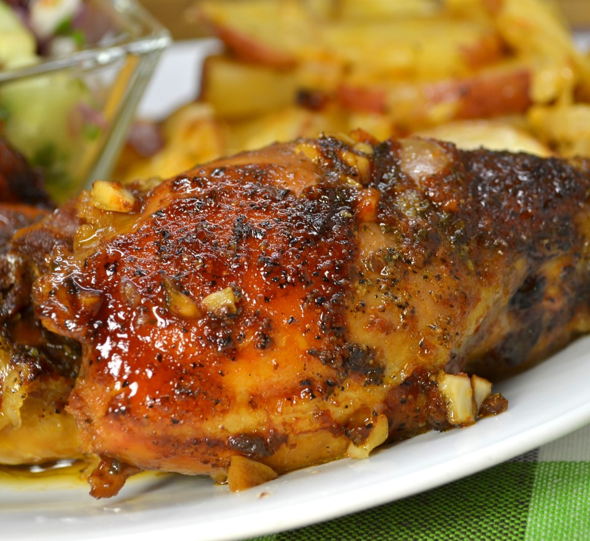

Honey-Garlic Slow Cooker Chicken Thighs

How to easily feed your kids
It's easy and uses pantry staples.
Serve with basmati rice or quinoa and steamed or roasted vegetables.
Ingredients
- 4 skinless, boneless chicken thighs
- ½ cup soy sauce
- ½ cup ketchup
- ⅓ cup honey
- 3 cloves garlic, minced
- 1 teaspoon dried basil
Steps
- Lay chicken thighs into the bottom of a 4-quart slow cooker.
- Whisk soy sauce, ketchup, honey, garlic, and basil together in a bowl; pour over the chicken.
- Cook on Low for 6 hours.
Nutrition Facts
Per Serving: 325 calories; protein 21.9g; carbohydrates 34.2g; fat 11.9g; cholesterol 70.9mg; sodium 2203.7mg. Full Nutrition
Return back